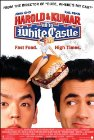
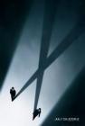
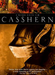

Files
List contains: 177 items, 361.3 hours. (2 are missing runtime)
Stephen Klancher
...has seen 126
...has seen 243.5 hours
...has not seen 117.8 hours

Timeline - Covers
Most Recent:
The X Files: I Want to Believe
First Unseen:
Munich (# 3)
...has seen 126
...has seen 243.5 hours
...has not seen 117.8 hours
Timeline - Covers
Most Recent:
The X Files: I Want to Believe
First Unseen:
Munich (# 3)
20.

The Phantom of the Opera (2004) Releases on 2005-01-21


4.
Romeo + Juliet (1996) Releases on 1996-11-01
Stephen Klancher: July 24, 2011 
Some parts were hard to follow or too over the top, but for the most part it was pretty fun to see the same lines portrayed in a radically different way.
5.

Mad Max (1979)

7.

Equilibrium (2002)
Stephen Klancher: SEEN
I remember someone made a comment like "just skip to the fight scene at the end of the movie and that's all you need to see." I disagree, I enjoyed the whole thing quite a bit. Dystopia stories are cool.


11.

Requiem for a Dream (2000)
Stephen Klancher: SEEN
I love the theme music (Clint Mansell's "Lux Aeterna"). But man, remembering this movie just makes me think "life is terrible."


24.

Citizen Kane (1941)
Stephen Klancher: February 12, 2008
Overrated. Compare to Casablanca because they are both "old movies" (1 year apart) and both always ranked high on movie lists.

27.

Eternal Sunshine of the Spotless Mind (2004) Releases on 1969-12-31
Stephen Klancher: SEEN
I love this movie. Would I zap my brain? Probably. Maybe I already did. How would I know? Whatever. I love this movie.


34.

Kiss Kiss Bang Bang (2005)


40.
Rain Man (1988) Releases on 1969-12-31
Stephen Klancher: SEEN
I remember watching this with Punchie... I assume we finished it, although I can't say I remember how it ended.
41.

12 Angry Men (1957)
Stephen Klancher: October 19, 2007
I actually saw the 1997 version first (Tony Danza!), but I love them both. Such a great thing to have a story focused down to pretty much one room and just watching the characters interact. I liked this (both versions actually) a lot.


45.

Goodfellas (1990)
Stephen Klancher: SEEN
I remember choosing to <i>not</i> watch this with Brett, then watching it maybe a year later and thinking I was stupid for missing out on it. Cool movie!


51.

There Will Be Blood (2007)
Stephen Klancher: April 17, 2008
Omg he'll drink your milkshake. Really, he'll do it. I think there may have been a good movie here. But all I remember is that he'll drink your milkshake.

98.
Seven Samurai (1954)
Stephen Klancher: SEEN
Watched this with Julie at some point. I mostly just remember liking the wild guy, full of bravado and fun to watch.
54.
A Scanner Darkly (2006) Releases on 2006-08-18
Stephen Klancher: July 24, 2006
Initially saw this in the theater with my dad and felt a little let down by it. I now think that might have been because I was watching it with him and knowing that he couldn't appreciate it.
Sometime later I rewatched the second half of this with another perspective and it was amazing.
Sometime later I rewatched the second half of this with another perspective and it was amazing.

57.

The Shining (1980)
Stephen Klancher: August 21, 2008
There are some seriously creepy moments in this movie. Even though I knew the gist of it and had seen parts on TV, when I finally sat down and watched it straight through, it freaked me out.


61.

The Princess Bride (1987)
Stephen Klancher: SEEN
We rented this movie at my dad's house when I was very young. So young in fact that I had no idea what the movie was called. I just had a vague memory of a really cool movie about a man in black with the storytelling grandfather as a frame for the adventure. In high school somehow this movie came up and I was excited to learn not only the title of the movie lost in my memories, but also that many other people liked it too. "As you wish" and "My name is Inigo Montoya" always make me smile.

65.

The Prestige (2006)
Stephen Klancher: SEEN
I liked this a lot. Although I seem to remember that something about it lead to an argument. Whatever, very fun.

68.

The Devil Wears Prada (2006)


72.

Rear Window (1954)
Stephen Klancher: October 20, 2007
I like Stewart, but I did not care much for this movie. Especially in comparison to other Hitchcock films I've seen: An ever increasing number as I go through the IMDB Top 250.
73.

Crank (2006) Releases on 2006-09-01

75.

Good Will Hunting (1997) Releases on 1969-12-31
76.

Kung fu (2004)
Stephen Klancher: May 31, 2010
Fun live anime-style battles with a good sense of humor about it. The battle with the musician assassins and their swords of sound was cool.
77.
Sunset Blvd. (1950)
Stephen Klancher: June 27, 2008
By the time she gets that crazy, the well known line is haunting: "All right, Mr. DeMille, I'm ready for my close-up." This is one of many movies about movies/actors/Hollywood that the IMDB list has led me to.

79.

Groundhog Day (1993) Releases on 1969-12-31
Stephen Klancher: SEEN
The joke is obvious but it's also the truth: I watched this movie over and over and over. This was one of a handful of movies we rewatched frequently growing up at my dad's house. I love Bill Murray and I love this movie.


86.

The Usual Suspects (1995) Releases on 1969-12-31
Stephen Klancher: SEEN
I remember thinking this was a really cool movie back when I watched it at Nick's house in high school. To be honest I can't remember much about it now, just the feeling that it was really cool... and seeing Spacey suddenly stop limping...


89.

Pulse (2006) Releases on 2006-08-11
Stephen Klancher: August 22, 2006
I thought this was really creepy and clearly enjoyed it more than most people.


93.

Harold & Kumar Go to White Castle (2004)
Stephen Klancher: September 10, 2010
Pretty funny. Though since I didn't see it until now, I see Kumar and I think Kutner from House.


99.

Psycho (1960)
Stephen Klancher: February 9, 2008
It was weird to me to see the shower scene, a cultural reference used so extensively, fleshed out and finally see the whole story associated with it.
100.

2001: A Space Odyssey (1968)
Stephen Klancher: SEEN
I think I watched parts of this in my Physics class in high school, then came home and watched the rest. I think there was no justification other than that Mr Loritz just wanted to watch the movie.


103.
Kill Bill: Vol. 1 (2003) Releases on 2003-10-10
Stephen Klancher: October 18, 2003
It was super exciting to go see this in the theater. I had watched other Tarantino movies over the previous year or two and introduced them to Brett sometime after we met. And seeing a movie like that in a theater down the street from a university makes for a fun crowd.

106.

La marche de l'empereur (2005)
148.
Sympathy for Mr. Vengeance (2002) Releases on 1969-12-31
110.
Demolition Man (1993)
Stephen Klancher: May 11, 2010
This is like a dystopian comedy. It is silly and I understand why some people wouldn't like it. But I take the whole thing as parody and in that light it is hilarious and fun.

113.
To Kill a Mockingbird (1962)
Stephen Klancher: July 22, 2010
Good story and good movie. I had said that I had seen this, but was never totally sure, so I had it in mind that I needed to (re)watch it before I could really say I'd seen the whole IMDb list. I'm sure I had seen at least some scenes before, but others I'm not sure if the familiarity is from having seen the movie or from when I read the book in 8th grade.

117.

The One (2001)
Stephen Klancher: SEEN
The only worthy opponent for Jet Li is Jet Li. And Yulaw is nobody's bitch. Also I love all the music in this movie.
118.
Spring, Summer, Fall, Winter... and Spring (2004) Releases on 2003-09-19


126.

You Only Live Twice (1967) Releases on 1967-06-13
Stephen Klancher: July 16, 2012
So ridiculous it is surreal. I do remember having watched this one with Bob years ago.


137.

The X Files: I Want to Believe (2008) Releases on 2008-07-25
140.

Oldboy (2003) Releases on 1969-12-31
Stephen Klancher: SEEN
This was a pretty mindfuck movie when I first saw it. I'd still like to watch the sequel/prequel at some point.
141.
My Sassy Girl (2001) Releases on 2001-07-27
Stephen Klancher: SEEN
Punchie convinced me to go to this at the Korean film festival at UCSD. I loved it and have watched it several times since. It strengthened my existing interest in foreign films and made me realize that Romantic Comedy wasn't necessarily a synonym for "shitty movie."


154.
The City of Lost Children (1995)
Stephen Klancher: July 9, 2011
Crazy movie. Unsurprised to see that it is the same directory as Delicatessen. Dominique Pinon is just as cool in this movie.


164.

Casshern (2004)
Stephen Klancher: June 25, 2011
I have mixed feelings about this. The style was very cool: they did a pretty good job of creating the feel of live action anime, and the choreography was good. But a lot of points throughout the movie were confusing. I think it is because they were trying to rush through a series worth of story in a movie length of time.
Also, the creator of of the Class Real Mindfuck Movies list seems to associate anime influence with mindfuck movies. I would say this was just anime-level weird, and not really mindfuck style.
Also, the creator of of the Class Real Mindfuck Movies list seems to associate anime influence with mindfuck movies. I would say this was just anime-level weird, and not really mindfuck style.
159.
Stay (2005)
Stephen Klancher: October 25, 2010
Now that was a real mindfuck. It put me in a tripped out state of mind the likes of which few movies have created.


167.

Delicatessen (1991) Releases on 1992-04-03
Stephen Klancher: May 28, 2011
What a weird, fun movie. The rhythm things they did throughout were a nice touch.
168.

Idiocracy (2006) Releases on 2007-01-25
170.

Logan's Run (1976)

172.

Dragonball Evolution (2009)
Stephen Klancher: June 4, 2009
As a fan of Dragonball (Z at least) I can't help but enjoy it some. And my expectations were already so low that disappointment was nearly impossible. What was left was just the fun of seeing things and characters I enjoyed. I can't believe they had Christine from Phantom of the Opera as Bulma and Chow Yun-Fat as Roshi. Chi Chi was really cute. No Krillin unfortunately. Bulma did have her Dragonball radar and her capsule transportation. So, yeah, I wouldn't recommend this to anyone, but I couldn't help but watch it. Kamehameha ftw!
173.

Strange Days (1995)
Stephen Klancher: August 27, 2008
Pretty fun. I watched this because it was on some internet list of best dystopia movies.
174.

Die Hard 2 (1990)
175.
Kick-Ass (2010) Releases on 2010-04-16
Stephen Klancher: June 27, 2010
Totally fun movie! So many of the scenes in this movie were like the answer to "what's the coolest thing that could happen in this situation?" Good music though much of it as well.
176.
For a Few Dollars More (1965)
Stephen Klancher: April 12, 2009
Fantastic! He's badass personified and the music makes every scene epic. The watch theme had a nice haunting feel to it.
The music kept making me think of the theme from the western episode of Cowboy Bebop. Of course I have the direction of the reference chronologically backwards...
The music kept making me think of the theme from the western episode of Cowboy Bebop. Of course I have the direction of the reference chronologically backwards...

178.
Crank: High Voltage (2009) Releases on 1969-12-31
Stephen Klancher: April 18, 2009
Whoa... This had the pacing of the first one but then got way more outrageous. Interesting music throughout and always surprising weirdness. A lot of people will hate this for a lot of reasons, but I think it has a sense of style that it executes very well. Don't see if you can't handle violence, nudity, racism, a story that ranges from implausible to impossible to silly, etc... But if you can, see it for the style and surprise: I had a lot of fun.
179.

V for Vendetta (2005) Releases on 2006-03-17
Stephen Klancher: March 17, 2006
I loved this movie. In terms of pure enjoyment coming out of the theater this ranks near the top for me. All kinds of cool.

181.

28 Days Later... (2002) Releases on 2003-06-27
Stephen Klancher: June 27, 2003
Went for a run in the morning with my friend Nick, then we got drinks at Sonic, played GTA:Vice City, and went to see this movie.
182.

Twelve Monkeys (1995)
Stephen Klancher: April 25, 2009
That was excellent. Brad Pitt is amazing as a crazy man and I always love Bruce Willis. Everything about the future scenes was so Terry Gilliam, although I was surprised to see no midgets. Time travel and insane prognostications blurring the lines between hallucinations and reality? Yes please.
Also, the creepy distorted "Merry Christmas!" at the end of her message was sampled in a very spooky sounding remix of Mario 64 haunted house music. I never knew what it was from until now, but I have always thought it was one of the most creepy distortions possible.
Also, the creepy distorted "Merry Christmas!" at the end of her message was sampled in a very spooky sounding remix of Mario 64 haunted house music. I never knew what it was from until now, but I have always thought it was one of the most creepy distortions possible.
183.

Die Hard (1988) Releases on 1988-07-15
Stephen Klancher: April 13, 2009
Yeah, I really hadn't seen Die Hard until today. That was a great action movie. I am very much a Bruce Willis fan, and Alan Rickman is a fantastic villain. Contrary to many action movies where there are only a few scenes of interest, I enjoyed this entire movie.
184.

Die Hard: With a Vengeance (1995)
Stephen Klancher: April 25, 2009
So-so story, but Bruce Willis plus Samuel L. Jackson is a fun combination and Jeremy Irons is a good villain. The ending felt like it was separate from the rest of the movie and quickly thrown in. Apparently there is a very different alternate ending so maybe that's why...
186.

Arizona Dream (1993)
Stephen Klancher: August 29, 2009
What a weird movie. Brett's response to me finding a Johnny Depp movie with surrealistic dreams: "Steve, they made a movie for you!"


190.

Pumping Iron (1977)
Stephen Klancher: June 9, 2010
There were a few funny moments I saw, but somewhere in there I fell asleep.